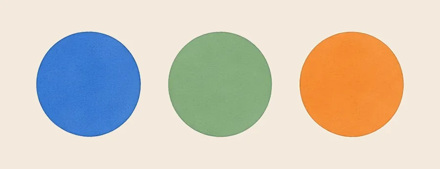
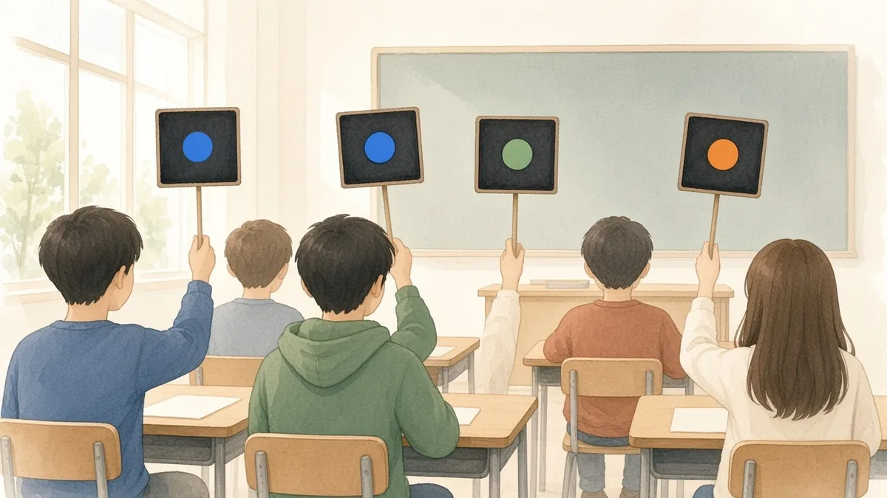
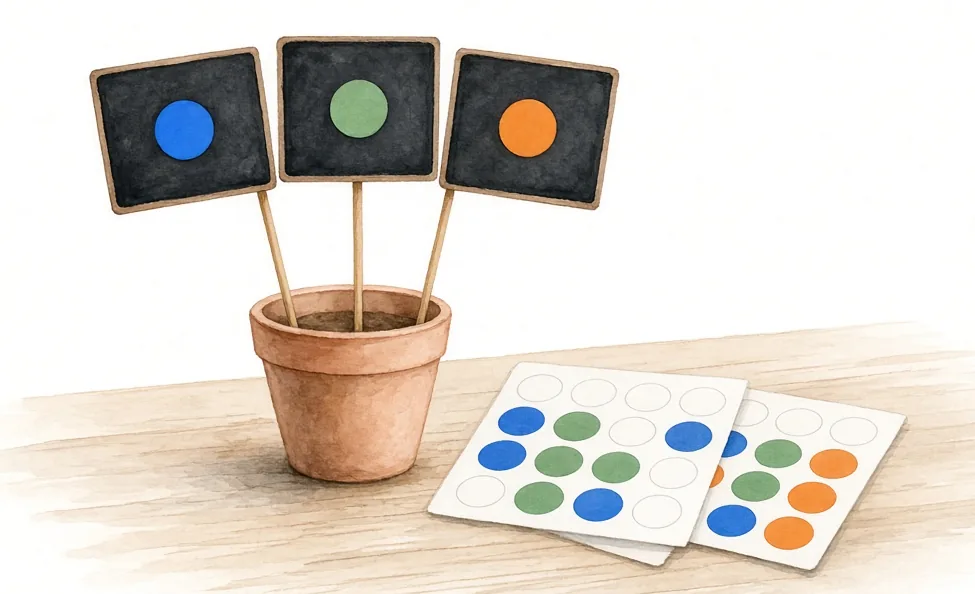
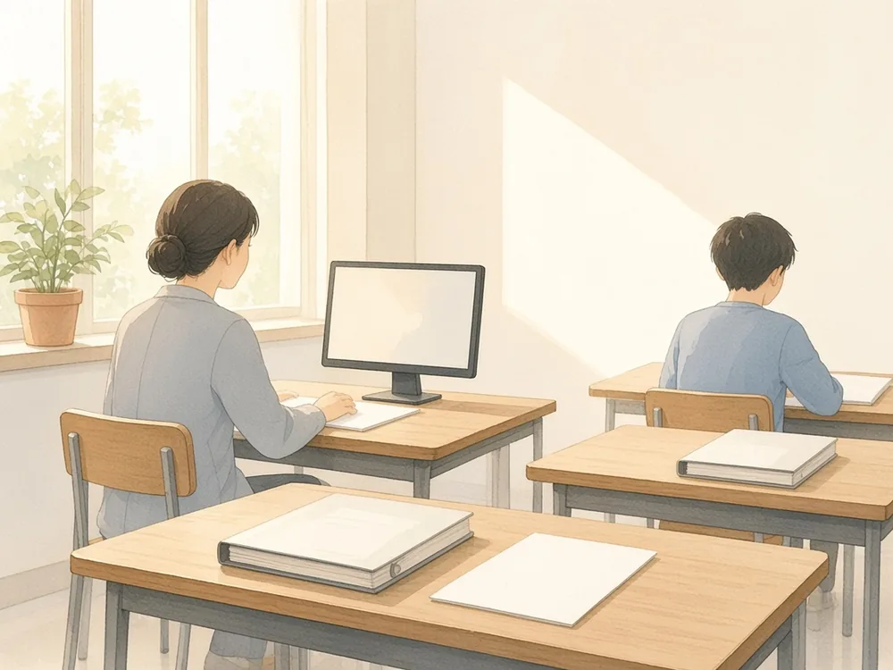

Méthode
Les signaux de classe
Un code couleur pour participer sans s'exposer : trois ardoises sur pique, un classeur noté, et une sortie de cours prévue avec la vie scolaire.


Ce que c'est
Chaque élève a trois petites ardoises sur pique, chacune avec une pastille de couleur. Rien n'est écrit sur l'ardoise : seule la couleur parle.

Les ardoises restent dans la classe, rangées dans trois bacs, un par couleur. En arrivant, chaque élève en prend trois et les pose à plat sur sa table. Au lieu d'appeler ou de crier, il lève discrètement l'ardoise qui convient. Personne n'est mis en difficulté devant les autres.
L'usage est obligatoire : au moins un signal par séance, pour chaque élève. Je compte chaque signal. La courbe des signaux, séance après séance, donne la note d'implication. C'est la progression qui compte, pas le nombre.
Le classeur
La séquence tient dans un classeur classique à anneaux, avec des pochettes plastifiées. Selon la classe, il reste en salle ou il rentre à la maison. Avant chaque période de vacances, il est noté : c'est la note de classeur, coefficient 2, qui va avec la note d'implication.
La sortie de cours prévue avec la vie scolaire
Tout est convenu à l'avance avec la vie scolaire et la direction, en début d'année. Rien ne s'improvise le jour même. Un élève qui perturbe sans arrêt et empêche les autres d'apprendre sort du cours après un avertissement clair. Jamais pour une erreur ou une difficulté.

Il travaille alors en salle d'études, avec son classeur et la fiche en cours, ou en salle informatique, où il télécharge la séquence sur itineraires-destinations.fr et reprend à la même fiche. Dans les deux cas, un adulte l'encadre. Le travail revient au professeur : il est corrigé et compté dans le classeur noté, comme celui des autres.
La sortie n'est pas une fin. L'élève peut revenir en classe. Avant de revenir, un court échange redit les règles. Il reprend ses trois ardoises : c'est un nouveau départ.
Téléchargements
Quatre fiches, chacune en PDF, Word et LibreOffice. Vous pouvez utiliser et adapter ces documents en citant leur autrice, sans usage commercial, et en partageant vos versions dans les mêmes conditions. CC BY-NC-SA 4.0.
-
Fiche professeur
PDF Word (.docx) LibreOffice (.odt) -
Grille de suivi
PDF Word (.docx) LibreOffice (.odt) -
Feuille courbe
PDF Word (.docx) LibreOffice (.odt) -
Pastilles de couleur à découper
PDF Word (.docx) LibreOffice (.odt)
Madame Carole Paoli Pompougnac
Illustrations originales.